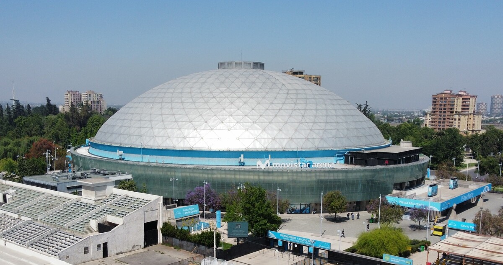

3I/ATLAS, un fragmento que atraviesa nuestro sistema solar portando información sobre procesos que ocurren más allá de nuestras fronteras estelares. Este evento reúne a destacados astrónomos y divulgadores científicos en un análisis único.
Fragmentos Interestelares propone comprender qué nos revelan estos objetos sobre la formación de otros mundos, la vida en el cosmos y nuestra posición en él. Esta es una invitación a replantear nuestra mirada hacia el universo y a preguntarnos:
¿Qué significa para la humanidad encontrarse con fragmentos provenientes de más allá del Sol?
Oradores
Dr. Avi Loeb
Astrofísico de Harvard, director del Proyecto Galileo
Dr. José Maza
Astrofísico, Premio Nacional de Ciencias Exactas
Dr. Neil deGrasse Tyson
Astrofísico y director del Hayden Planetarium
Dr. Carl Sagan
Astrofísico y visionario de la exploración cósmica
Agenda
- • 08:30 (Avi Loeb) La Tercera Visita: Anatomía del Objeto Interestelar 3I/ATLAS
- • 09:30 (Neil deGrasse Tyson) Los Visitantes Silenciosos: Modelos Dinámicos y Curvaturas Inesperadas
- • 11:00 (José Maza) Ecos de Otras Civilizaciones: La Hipótesis de Artefactos Interestelares
- • 12:30 (Carl Sagan) Narrativas del Cosmos: Cómo Contamos lo Incomprensible
- • 14:00 - Cierre
Localización

Movistar Arena, Santiago de Chile
Evento:
Reserva tu plaza, el evento comienza en: